My efforts culminated in a piece of open source software, which I released as part of this book, called BlueLeaks Explorer. BlueLeaks Explorer is a web application that allows you to examine the BlueLeaks data almost as if you could log in as an admin on the actual websites that were hacked. BlueLeaks Explorer is a little like a large Python script that makes all of the CSVs in BlueLeaks easier to work with, like the scripts you wrote in Chapter 9.
In this chapter, you’ll continue to investigate the BlueLeaks dataset, this time using BlueLeaks Explorer. I’ll give you a thorough overview of the software, including how to set it up on your own computer and how to start researching BlueLeaks with it. I’ll conclude the chapter by explaining the technology behind the app and pointing you to its Python source code on GitHub. If you ever need to develop an app to investigate a specific dataset, you can use this chapter as inspiration.
Undiscovered Revelations in BlueLeaks¶
As discussed in the previous chapter, my BlueLeaks investigation focused on the data from the ncric folder. Even within that folder, I concentrated on the final two weeks of data, focusing on police surveillance of the Black Lives Matter movement. Other journalists dug into different parts of the dataset, investigating fusion centers in places like Maine and Texas.
Notably, journalist Nathan Bernard broke several stories for the local news-and-arts magazine Mainer based on BlueLeaks documents from the Maine Information and Analysis Center (MIAC), Maine’s fusion center. These included stories about MIAC disseminating unverified rumors, sometimes based on satirical social media posts, that were first spread by far-right activists on social media and then included in FBI and DHS intelligence reports, similar to the FBI warning discussed in Chapter 9 about a George Soros−funded group hiring “professional anarchists.” “This bogus intel gives cops a dangerously distorted sense of what to expect during demonstrations by portraying peaceful protesters as highly trained, paid and organized criminal actors intent on causing mayhem,” Bernard wrote in one article.
Additionally, John Anderson and Brant Bingamon wrote a series of articles for the Austin Chronicle, a local paper in Austin, Texas, based on BlueLeaks documents from the Austin Regional Intelligence Center (ARIC), Austin’s fusion center. Anderson wrote about ARIC’s practice of monitoring for and distributing lists of local Black Lives Matter protests (just like NCRIC did during the summer of 2020) and about several SARs posted to ARIC, including one where the “suspicious activity” was someone mailing a package of toys to Lebanon. Bingamon wrote stories revealing that ARIC had monitored local leftist groups in Austin, and that some ARIC courses for law enforcement teach junk science—including a technique for detecting deception called Scientific Content Analysis (SCAN), which a 2016 study concluded has “no empirical support” (https://www.ncbi.nlm.nih.gov/pmc/articles/PMC4766305/).
MIAC, ARIC, and NCRIC are some of the BlueLeaks sites that have received the most interest, but many more haven’t gotten any attention at all. By the end of this chapter, you’ll have all the tools you need to do a deep dive on any BlueLeaks folder you choose and search for newsworthy revelations. To start, you’ll install BlueLeaks Explorer in Exercise 10-1.
Exercise 10-1: Install BlueLeaks Explorer¶
You can find BlueLeaks Explorer’s source code at https://github.com/micahflee/blueleaks-explorer. That GitHub page includes instructions on how to get it up and running locally on your computer, but I’ll explain all the steps in this exercise as well.
The BlueLeaks Explorer app is packaged as a Docker image and published to Docker Hub at https://hub.docker.com/r/micahflee/blueleaks-explorer. You’ll run it locally on your computer using Docker and point it at your BlueLeaks folder. Before you begin, make sure you’ve completed the exercises in Chapter 5 so that you understand how to use Docker and Docker Compose.
Create the Docker Compose Configuration File¶
Start by creating a new folder called blueleaks-explorer. This folder will require about 5GB of disk space. Create a new file in that folder called docker-compose.yaml and open it in your text editor.
NOTE If you’re using Windows, I recommend that you follow this chapter in Ubuntu with WSL rather than PowerShell (see Appendix A for information about performance issues you might encounter when using Docker in Windows). You can open an Ubuntu terminal, create the blueleaks-explorer folder in your Linux filesystem using mkdir blueleaks-explorer, and edit the docker-compose.yaml file in VS Code by running code docker-compose.yaml, all from Ubuntu.
Here’s how I created the folder and made the docker-compose.yaml file on my Mac. You can do the same in Linux or Windows with WSL:
micah@trapdoor ~ % mkdir blueleaks-explorer
micah@trapdoor ~ % cd ~/blueleaks-explorer
micah@trapdoor blueleaks-explorer % code docker-compose.yaml
Add the following code to your docker-compose.yaml file, replacing
/Volumes/datasets/BlueLeaks-extracted with the path that maps to
/data /blueleaks in your own BlueLeaks-extracted folder:
version: "3.9"
services:
app:
image: micahflee/blueleaks-explorer:latest
ports:
- "8000:80"
volumes:
- /Volumes/datasets/BlueLeaks-extracted:/data/blueleaks
- ./databases:/data/databases
- ./structures:/data/structures
This file describes the settings for the BlueLeaks Explorer Docker
container. The container is called app and is set to use the latest version
of the micahflee/blueleaks-explorer Docker container image, which you’ll
download from Docker Hub. The ports section maps port 8000 on your
computer to port 80 inside the container. This means that once the
BlueLeaks Explorer app is running, you can load it on your browser at
http://localhost:8000. The
volumes section maps folders
on your machine to folders inside the container.
Save the docker-compose.yaml file.
Bring Up the Containers¶
In a terminal window, change to the blueleaks-explorer folder that you just made, then run this command to download the BlueLeaks Explorer Docker image and start the server:
docker-compose up
The first time you run the command, the output should end with something like this:
blueleaks-explorer-app-1 | * Serving Flask app 'app'
blueleaks-explorer-app-1 | * Debug mode: off
blueleaks-explorer-app-1 | WARNING: This is a development server. Do not use
it in a production deployment. Use a production
WSGI server instead.
blueleaks-explorer-app-1 | * Running on all addresses (0.0.0.0)
blueleaks-explorer-app-1 | * Running on http://127.0.0.1:80
blueleaks-explorer-app-1 | * Running on http://172.19.0.2:80
blueleaks-explorer-app-1 | Press CTRL+C to quit
At this point, BlueLeaks Explorer is running on your computer, but it hasn’t been initialized. If you load http://localhost:8000 in your browser, you should get an error telling you as much.
Initialize the Databases¶
The first time you use BlueLeaks Explorer, you must run a script to convert the many CSV files in BlueLeaks into SQLite databases. SQLite is lightweight SQL database software that can store a whole database in a single file (you’ll learn more about SQL databases in Chapter 12. All of the CSVs in BlueLeaks were originally formatted as SQL tables, which the hacker exported into CSV format. Converting these CSV files back into database tables makes it easier for the Python code that runs BlueLeaks Explorer to query for and access items within those tables, then display them in the web app. For example, when searching for SARs that contain a specific string, BlueLeaks Explorer might search all the BriefSummary fields in the SARs table, trying to find reports that mention that string.
To initialize BlueLeaks Explorer, open a separate terminal window, change to your blueleaks-explorer folder, and run this command:
docker-compose exec app poetry run python ./initialize.py
This will run
poetry run python ./initialize.py in your already running app container. The initialize.py Python
script will take a while to finish running, since it’s transforming
thousands of CSV files into hundreds of SQLite databases; it took my
computer about 50 minutes.
NOTE If you’re curious about the details of what the initialization script is doing, take a look at the source code. BlueLeaks Explorer is open source, meaning you can check out the `initialize.py`` file in the project’s git repository at https://github.com/micahflee/blueleaks-explorer/blob/main/src/initialize.py.
When initialize.py finishes running, refresh http://localhost:8000 in your web browser to pull up BlueLeaks Explorer, as shown in Figure 10-1.
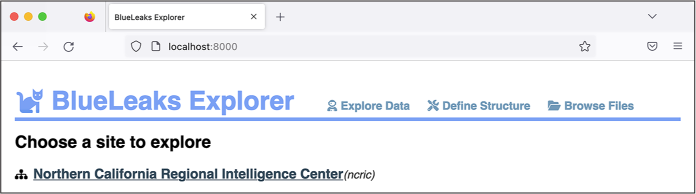
Figure 10-1: The freshly installed BlueLeaks Explorer app
Each fusion center is unique: it’s run by different people, has different priorities and goals, and keeps track of different data. To make the best use of BlueLeaks Explorer, you need to spend some time understanding how the data in your target fusion center is laid out. I call this layout the structure of a BlueLeaks site. This refers to which tables contain useful information (some tables are empty or contain irrelevant data about the website layout), which columns in those tables are useful, and how the various tables are related.
The top of every page in BlueLeaks Explorer includes three links, as shown in Figure 10-1: Explore Data, Define Structure, and Browse Files. It would be difficult to automatically figure out the structure of a BlueLeaks site, in part because it’s subjective—individual users determine what information is interesting or useless for their purposes. Therefore, the Define Structure page brings you to an editor where you can define your own structures for BlueLeaks sites. Under Explore Data, you can find structures you’ve already created for individual BlueLeaks sites. Since you’re running BlueLeaks Explorer locally on your own computer, you’ll have access only to structures you’ve made yourself or that are included in the BlueLeaks Explorer Docker image. Finally, Browse Files lists all of the files in BlueLeaks, enabling you to link to specific documents or embed images; it’s simply a web interface to the raw BlueLeaks data, as if you were looking at it in a file browser.
NOTE If you set up a VPN to hide your IP address from fusion center websites as described in “Covering Your Tracks with a VPN Service” in Chapter 9, you may want to use a VPN for this chapter as well. Though BlueLeaks Explorer is hosted on your own computer, viewing content within it might load images from fusion center sites, and clicking links could bring you to those sites.
In the following section, you’ll begin by exploring the data for the NCRIC site using a structure that I’ve already created.
The Structure of NCRIC¶
BlueLeaks Explorer allows you to browse and search all of the tables in any BlueLeaks site that you have a structure for. To demonstrate the features of the app—including listing the tables in a BlueLeaks site, viewing and searching the data in those tables, viewing data from related tables, and viewing images and documents associated with rows of data—you’ll start by exploring the NCRIC data. This will help you understand how structures are constructed before you make your own.
Exploring Tables and Relationships¶
As directed in Exercise 10-1, make sure your BlueLeaks Explorer Docker container is running and load http://localhost:8000 in your browser. From the Explore Data section, click Northern California Regional Intelligence Center. Figure 10-2 shows this page.
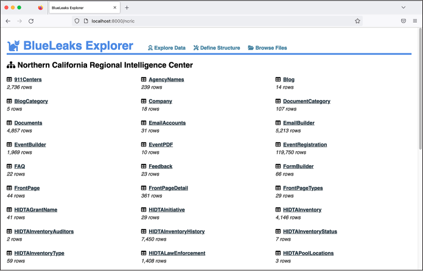
Figure 10-2: Viewing the NCRIC tables in BlueLeaks Explorer
Here, you can see a list of tables in the ncric folder, as well as the number of rows of data in each table. The EmailBuilder table has 5,213 rows, for example. I’ve hidden all of the tables that are empty or contain information I considered irrelevant so that they don’t show up here.
When I first defined the NCRIC structure, I started by exploring the data in each table, one at a time (I’ll explain how you can do this for other parts of BlueLeaks later in the chapter). I found that the following tables contained the most interesting and potentially newsworthy data:
EmailBuilder Contains all of the bulk email NCRIC sends out to its large list of local police and private industry partners
EventBuilder Describes events that NCRIC put on, complete with their descriptions, PDF flyers, and lists of who attended
FormBuilder Contains a list of forms on NCRIC’s website for a variety of purposes, like submitting SARs, requesting technical help, or even registering for an account with the fusion center
Requests Includes requests from local police for the fusion center’s assistance with tasks like monitoring social media and breaking into locked phones
SARs Contains suspicious activity reports, which, as you learned in the previous chapter, are files submitted to NCRIC in which people report behavior that they believe could be criminal or otherwise suspicious
SurveyForm Includes surveys that NCRIC requests from attendees of events it has hosted
Different tables within BlueLeaks relate to each other in various ways. For example, as you know from the previous chapter, many of the BlueLeaks sites include the tables Documents and DocumentCategory. Both of these tables contain a field called DocumentCategoryID. One row in the Documents table in the ncric folder, for instance, describes a document titled FBI NSIR Tradecraft Alert Voter Suppression. The DocFilename field contains the path of a PDF. The DocumentCategoryID is 167. Looking at the row with that DocumentCategoryID in the DocumentCategory table, you can see that the CategoryName is Elections. Now you know that NCRIC put this document in the Elections category. In database-speak, two tables that are connected via a shared field have a relationship. The SurveyForm table, which lists surveys for attendees of NCRIC-hosted events to fill out, is also related to the Survey table, which includes the actual survey feedback.
BlueLeaks Explorer makes it easy to quickly find related information within a BlueLeaks site. Click the Documents table from the list of tables shown in Figure 10-2. You should see a list of documents, each on its own row in the Documents table. In the Search field, enter Voter Suppression to bring up the FBI NSIR Tradecraft Alert Voter Suppression document, shown in Figure 10-3.
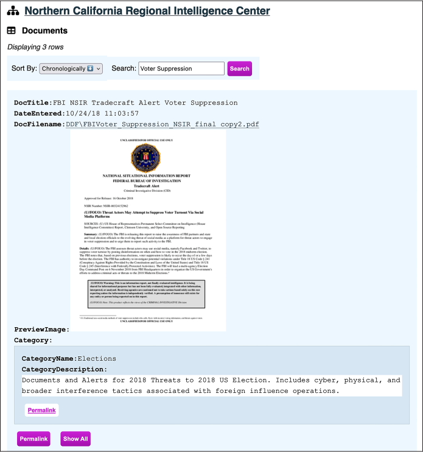
Figure 10-3: Viewing the FBI NSIR Tradecraft Alert Voter Suppression document in BlueLeaks Explorer
When you view a document row using the NCRIC structure I defined, BlueLeaks Explorer will show you a link to the file itself—in this case, a PDF. It also shows a preview of the file if it’s available (the path to the preview image is listed in the PreviewImage field), along with the document category—in this case, Elections.
If you click the filename link, the PDF will open. Dated October 16, 2018, the document warns, “The FBI assesses threat actors may use social media, namely Facebook and Twitter, to suppress voter turnout by posting disinformation on when and how to vote in the 2018 midterm election.” It points out examples of voter suppression tactics on social media from the 2016 election, such as a Spanish-language meme claiming that you can vote for Hillary Clinton by texting “Hillary” to a specific phone number—tricking voters into falsely believing they voted for Clinton.
Next, click Permalink under the Elections category to get to the category itself. Your URL should now be http://localhost:8000/ncric/DocumentCategory/167, and from here you should see all 11 documents categorized in Elections. You can click Permalink under any of those documents to view it. You can easily flip between documents and their categories in this way because I defined a relationship in the NCRIC structure between the Document and DocumentCategory tables. The permalink brings you to a unique URL just for that row. During an investigation, you can keep track of any interesting items in the dataset using their permalinks so you can easily refer back to them later on. The Show All link will show all of the hidden fields for this row. I’ve configured the Documents table to show only a handful of fields: DocTitle, DateEntered, DocFilename, URL, PreviewImage, and the DocumentCategory relationship. Clicking Show All will show you the remaining hidden fields as well.
Searching for Keywords¶
For a concrete example of how BlueLeaks Explorer makes it easier to investigate the BlueLeaks documents, let’s revisit the SAR described in Investigating a SAR in Chapter 9 in which a lawyer reported a student protester. This time, instead of manually grepping CSV files and copying and pasting big blocks of text from fields in spreadsheets for easier reading, you’ll do it all in BlueLeaks Explorer.
Go back to the NCRIC list of tables, click SARs, and search for antifa to find that specific row. Figure 10-4 shows the record. The File1 row should display a clickable link to the PDF originally attached to the SAR, allowing you to quickly open the document. If you click it, you’ll immediately be able to read the PDF in another browser tab.
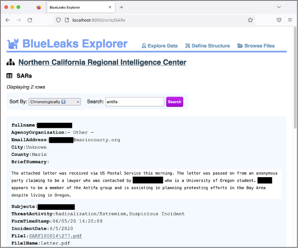
Figure 10-4: Viewing a SAR in BlueLeaks Explorer
Now that you have an idea of how to navigate BlueLeaks Explorer, it’s your turn to explore other parts of the BlueLeaks dataset beyond NCRIC.
Building Your Own BlueLeaks Structure¶
In this section, you’ll learn how to define your own structure for another BlueLeaks site, the Los Angeles Joint Regional Intelligence Center (JRIC). By the end of this section, you’ll have the tools you need to create structures for all of the BlueLeaks sites.
Building out a BlueLeaks Explorer site structure takes work, but it also helps you gain a much clearer understanding of the data. Once you’ve started cleaning up a few of the tables, you can spend time reading them, looking for newsworthy revelations. As you read, you’ll probably end up tweaking the structure to help you in your research, and you’ll also likely start cleaning up new tables as you discover relationships to them.
Defining the JRIC Structure¶
Some structures, like the one I constructed for NCRIC, are already included with BlueLeaks Explorer. To either edit existing structures or define new ones, load BlueLeaks Explorer in your browser and click Define Structure at the top of the screen. Figure 10-5 shows the page that should pop up.
On the Define Structure page, every structure that is already defined is listed under Edit Structures. In Figure 10-5, this is just a single structure, NCRIC. To edit a structure, simply click its name. The BlueLeaks sites that don’t yet have a structure are listed by their folder name under Define a New Structure, along with a button to create that new structure. Scroll down until you see the listing for jric, and click Create.
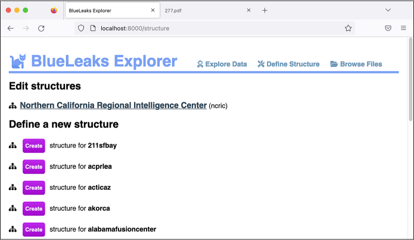
Figure 10-5: Viewing the Define Structure page in BlueLeaks Explorer
In the page that opens, you can configure exactly how BlueLeaks Explorer should work when you investigate the JRIC data, as shown in Figure 10-6. The top of the page displays the name of the site, which defaults to the BlueLeaks folder name, jric.
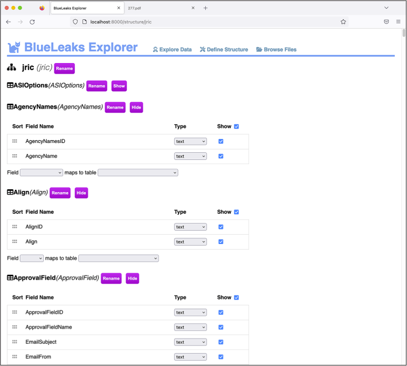
Figure 10-6: Editing the JRIC structure in BlueLeaks Explorer
Click Rename next to the site name and enter Los Angeles Joint Regional Intelligence Center. Every time you make a change like this, you should see the message “You have unsaved changes,” with a Save button, in the bottom-right corner. Click Save.
Below the site name, the Edit Structure page lists all of the tables in this BlueLeaks site. Next to each table name is the Rename button, as well as buttons to show or hide the table. BlueLeaks Explorer automatically detects tables that don’t have any rows and hides them by default; this is why the ASIOptions table starts out hidden. You can also manually hide tables that you don’t care about to reduce clutter when you’re actually investigating this site later on.
Now that you’ve created the JRIC structure, open the Explore Data link at the top in a separate browser tab. You should see that the Los Angeles Joint Regional Intelligence Center site has been added to the list of sites to explore. Figure 10-7 shows the new Explore Data page.
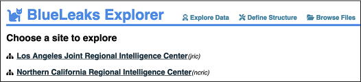
Figure 10-7: The Explore Data page after you’ve created the JRIC structure
Any additional structures you create for other BlueLeaks sites will also appear on this page.
Click the JRIC link to pull up all the tables in this site. As you work through the rest of the section, and when building a structure in BlueLeaks Explorer in general, keep two tabs open: the Explore Data and Define Structure pages. This way, when you save changes in the Define Structure tab, you can refresh the Explore Data tab to see them implemented.
Showing Useful Fields¶
In Exercise 9-3, you wrote a Python script to automatically create a spreadsheet mapping the names of BlueLeaks folders to their associated organizations. You found this information in Company.csv, a spreadsheet with 108 different columns. Only a few fields in this spreadsheet proved to be relevant, which makes this a good table for practicing showing only useful fields.
In your Explore Data tab, click the Company table. You should see the page shown in Figure 10-8. There are 7 rows displayed, each containing all 108 different fields, some of which include lots of HTML. Because each row has so many fields, this figure shows only the fields at the beginning of the first row of data.
The text in these fields isn’t very readable yet, but that’s easy to fix. Back in your Define Structure tab, scroll down until you find the Company table. For each field, you can choose the type from a drop-down menu and toggle a checkbox to set whether or not you want it to appear in the Explore Data page. For example, you probably don’t care about the value of BannerAdHeight, so you’d want to hide that field.
You can also click the checkbox next to Show at the top of the table to toggle all the checkboxes at once. Click it now to uncheck—that is, hide—all of the fields in the Company table. From here, you can scroll through and select only the most useful fields to display.
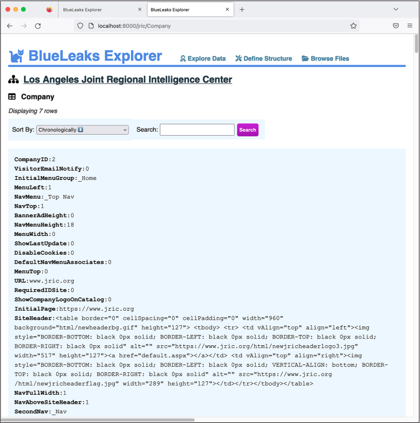
Figure 10-8: Exploring data in JRIC’s Company table before editing the structure
By reading through the Explore Data page, I can guess that the most useful fields include URL, InitialPage, SiteHeader, and CompanyName. Back on the Define Structure page, check the boxes next to these fields to show them and then click Save. Refresh the Explore Data page. It should now look like Figure 10-9.
The Explore Data page still lists all seven rows in the Company table, but this time it shows only the four specific fields you selected, which makes it much easier to read through. As you can see from the second row of data, the Explore Data page also hides empty fields—the leads.jric.org row doesn’t have anything in its SiteHeader field, so BlueLeaks Explorer skips that field.
You can still see all of the hidden fields for any row by clicking the Show All button below it. In the course of an investigation, you might discover that a field you chose to hide is actually useful, in which case you can edit the structure again to display it.
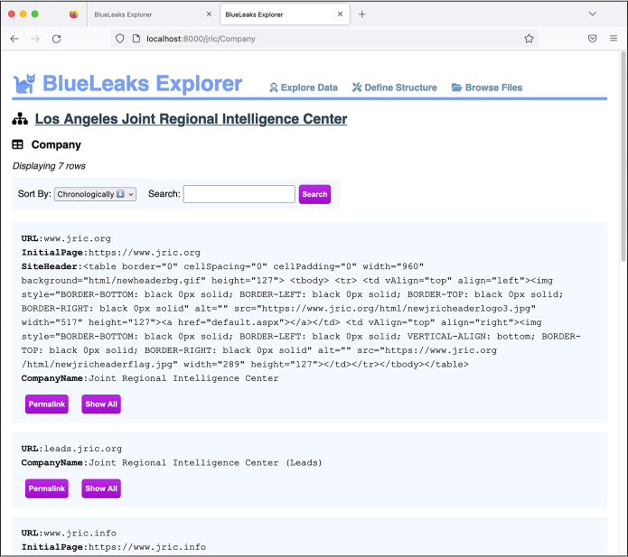
Figure 10-9: Viewing JRIC’s Company table with the irrelevant fields hidden
Changing Field Types¶
The Explore Data page is much more readable now, but it’s still not perfect. The SiteHeader field is hard to read because it’s a block of HTML. It would also be nice if CompanyName appeared at the top of the list of fields. Let’s make one more change to fix that.
Every field in BlueLeaks Explorer starts out as text, and it’s up to you to change the type if you think there’s a better way to display that field. Here are all of the types that are available:
text Displays the value as text; this is the default for all fields
html Renders the value as an HTML web page
pre Displays the field’s value as text in a fixed-width font and preserves all of the original spacing (see the BriefSummary field in Figure 10-4 for an example)
image Loads an image from a path directly in your browser; choose this type only if the field contains a path to an image (see the PreviewImage field in Figure 10-3 for an example)
attachment Displays a filepath as a text link directly to the file; choose this type only if the field contains a path to a non-image file (see the DocFilename field in Figure 10-3 for an example)
survey Recognizes the format of SurveyData fields, which appear only in Survey tables and contain feedback from attendees of events hosted by fusion centers—and makes the results easier to read
Back in the Edit Structure tab, find the SiteHeader field. This field has a Type drop-down menu that’s currently set to text; switch it to html. Now scroll down until you find the CompanyName field. Click the grip icon to the left of it and drag it to the top of the list of fields. Click Save again and refresh the Explore Data tab. Your Company table should now look like Figure 10-10.
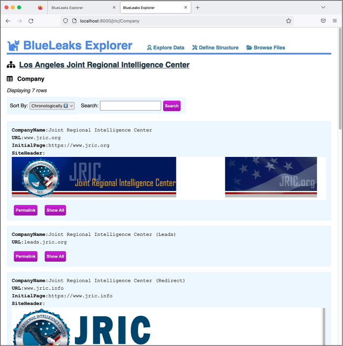
Figure 10-10: Exploring JRIC’s Company table after editing its structure
Because you changed the SiteHeader field type from text to HTML, BlueLeaks Explorer renders it as HTML and loads the JRIC header image hosted from JRIC’s web server. Figure 10-10 also shows that the CompanyName field is now listed first for each row.
Adding JRIC’s Leads Table¶
In your Explore Data tab, go back to the JRIC table listing. This time, click the Leads table. If you read through its rows, you’ll see that this table is full of SARs. It’s similar to NCRIC’s SARs table, except that its leads are submitted by both the fusion center’s partners and members of the public, and it appears to retain data forever, whereas the NCRIC SARs table includes only one month’s worth of SARs. To get more practice using BlueLeaks Explorer, including setting up a relationship between two tables, you’ll define the structure for the Leads table next.
In your Define Structure tab, find the Leads table, hide all of its columns, and repeat the steps you followed with the Company table to show only the useful fields, selecting the most appropriate type for each. After reading through the first several rows of Leads data in the Explore Data tab, I decided to show FormTimeStamp, County, PhoneNum, EmailAddress, ActivityDate, ActivityTime, ActivityDetails, fullname, Information, NSFormName, FUpload, and FUploadName. Feel free to show or hide different fields yourself.
After saving the structure and refreshing the Explore Data page, I get these fields from the first row in the Leads table:
FormTimeStamp 06/07/20 00:39:09
County Los Angeles
PhoneNum [redacted]
EmailAddress [redacted]@torrenceca.gov
ActivityDate 06/06/20 00:00:00
ActivityTime 1345
ActivityDetails On the above date and time officers were dispatched to a call of a suspicious package. Upon, arrival [sic] officers noticed that the package had bottles with a cloth items [sic] sticking out of the top of the bottle resembling a Molotov Cocktail. This package was in the general area of a BLM protest that was going on. (see attached report and photos)
NSFormName PublicCountyLeadSheet
FUpload LFU00010\984.docx
FUploadName 200020437.docx
The FUpload and FUploadName fields both contain filenames. Notice that FUpload seems to be the path to a file inside the BlueLeaks dataset. Back in the Define Structure page, change the type of FUpload from text to attachment, save your changes, and refresh the Explore Data page. The FUpload field should now link to http://localhost:8000/blueleaks-data/jric/files/LFU00010/984.docx, which loads the document from your local copy of the data. You can click this link to read it if you’re curious. The filename is 984.docx, but it appears that the person who submitted this lead originally uploaded the file as 2000020437.docx.
Looking through other rows in this Leads table, I also notice that values in the NSFormName field are different for different leads. My guess is that this field describes which form was filled out to add this lead to JRIC’s database. Most of the values for NSFormName appear to be PublicCountyLeadSheet or LeadSheetPrivateSectorAndPublic. Is the Leads table related to some other table that describes forms? Let’s find out.
Building a Relationship¶
Go back to the page listing all of the tables in JRIC and click the table named FormBuilder. This table doesn’t have a field called NSFormName, but it does have one called FormName. If you search the table for PublicCountyLeadSheet and LeadSheetPrivateSectorAndPublic, you will see that the row with ID 1 has a FormName value of PublicCounty LeadSheet, and the row with ID 2 has a FormName value of LeadSheet PrivateSectorAndPublic. (From the FormBuilder table page, you could sort it by FormBuilderID ascending to see these first two rows in that table as well.) Because the NSFormName field on the Leads table maps to the FormName field on the FormBuilder table, there’s a relationship between these two tables. Let’s create that relation in BlueLeaks Explorer.
Back in the Define Structure page, scroll down to the bottom of the Leads table. After the list of fields, there’s another section that says Field Maps to Table. Both Field and Table are drop-down menus. Click the Field drop-down menu to list all of the fields in this table and select NSFormName. Click the Table drop-down menu, which lists all of the other tables in this BlueLeaks site, and choose FormBuilder. Once you select the table, you should see a third drop-down menu that lets you choose the field in that table. Choose FormName and click Create Relationship. A prompt should pop up, asking, “What is the name of this relationship?” Enter Form and click OK, then save your changes.
Back in the Explore Data tab, navigate back to the Leads table. For each lead, you should now see all of the fields from the form that was used to submit the lead. However, as Figure 10-11 shows, it’s difficult to read.
As you can see, the related form is displayed, but, like the Company table you worked with previously, far too many fields are shown, including blocks of HTML that are difficult to make sense of. To fix this, you’ll edit the structure of the FormBuilder table as you did with the Company and Leads tables. As you build structures, I recommend finishing one table so that it displays nicely, then moving on to related ones.

Figure 10-11: An item in the JRIC Leads table, now with a relationship to the FormBuilder table
Go back to the Define Structure tab, find the FormBuilder table, and hide all of its fields. Check the boxes to show FormName and FormContent, and change FormContent’s type from text to html. You already added a relationship to the Leads table that links it to the FormBuilder table, so while you’re here, create a relationship in the other direction as well. Scroll down to the bottom of the FormBuilder table and add a new relationship: map the FormName field to the Leads table’s NSFormName field. This time, when you create the relationship, name it Submissions. Save your changes in the Define Structure tab.
In your Explore Data tab, navigate to the Leads page again to see what it looks like. Now as you scroll through each lead, you can see which form was filled out to submit it. Figure 10-12 shows a different example from the Leads table.
In this case, a member of the public rather than a fusion center member filled out this form, using a fake name and email address (John Doe and idont@thinkso.org). They wrote a message, in all caps, about a fireworks store in Pahrump, Nevada, just over the border from California:
ON SATURDAYS, ALL 3 STORES ARE PACKED AND OVER 90% OF THE TRAFFIC IS FROM CA. THEY ARE ALSO ALMOST ALL BLACK OR MEXICAN. NO DISRESPECT TO RACE, BUT DOESNT THAT SORT OF MEET YOUR PROFILE OF PROBLEMS LATELY? I DONT REALLY CARE ABOUT THE CAUSES EITHER WAY, BUT THE UNREST IS HURTING TRUMP. I WOULD BET YOU HAVE A FEW ANTIFA PEOPLE BUYING FIREWORKS TO CAUSE TROUBLE. JUST THOUGHT I WOULD MENTION IT.
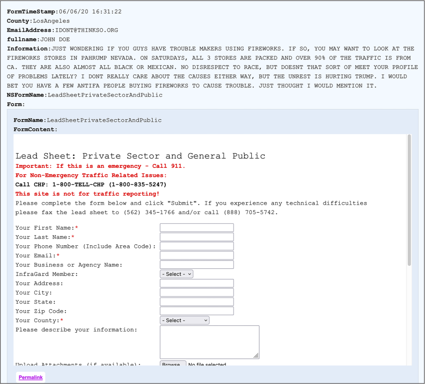
Figure 10-12: An item in the JRIC Leads table, with a cleaned-up relationship to the FormBuilder table
BlueLeaks Explorer shows you LeadSheetPrivateSectorAndPublic, the form that was filled out to submit this lead. Scroll to the bottom of the form and click Permalink to go to a page that shows just the LeadSheetPrivateSectorAndPublic form in the FormBuilder table. Because of the Submissions relationship you created, this page should show you everything that was submitted to JRIC using this form—all 1,949 leads submitted by the public.
Verifying BlueLeaks Data¶
Whenever you’re looking at leaked or hacked data, you should always do additional research outside of the dataset itself to help verify that the data is authentic and put it into context. By looking at the Company table in the previous section, you learned that the JRIC site is hosted at https://www.jric.org. Load that link in Tor Browser (covered in Chapter 2) or while connected to a VPN, and check out the JRIC website.
At the time of writing, I could tell from the website that this fusion center focuses on the Los Angeles area. Some of the BlueLeaks sites went offline after the hack in 2020, but many, like JRIC, remained online. Figure 10-13 shows JRIC’s website, loaded anonymously in Tor Browser.
Figure 10-13: The home page of JRIC’s website,
It wasn’t clear to me that JRIC was a fusion center focused on Los Angeles, or what its mission was, until I viewed its website. If you click around the JRIC site to get a better understanding of the types of information it collects, you can then use BlueLeaks Explorer to view that information. For example, if you click the Submit a SAR link at the top of the home page, you can find the forms that add SARs to the Leads table.
You’ve only explored a small amount of content in the JRIC data so far. Now it’s time to finish building the structure so you can explore the rest.
Exercise 10-2: Finish Building the Structure for JRIC¶
In the previous sections, you started building the structure for the JRIC data. You cleaned up the Company, Leads, and FormBuilder tables and created a relationship between the latter two tables, allowing you to see which form was submitted to create each lead and which leads were created from each form. In this exercise, you’ll use your newfound knowledge to finish defining the structure for the other tables in JRIC. This will give you a clearer understanding of exactly what data was stored there, making it much easier to continue your investigation. It will also give you practice creating structures for the rest of the BlueLeaks sites.
You can play with BlueLeaks Explorer however you wish to customize the JRIC structure to suit your preferences. However, if you’re not sure where to start, I recommend beginning with the first table (AgencyNames), then the second (Align), and so on, finishing with the last table (VideoOptions). If you run into a table that has a relationship to another table, work on the related table first before you continue down the list.
For example, here’s how I’d start the AgencyNames table. In the Explore Data tab, in the list of JRIC tables, click AgencyNames. This table has 1,396 rows, and each row has just two fields: AgencyNamesID and AgencyName. The names appear to be various military agencies, police departments, school districts, and other organizations—my guess is these are all of JRIC’s partners. This data is pretty easy to read and search by itself, so I’d consider this table done already.
Still in the Explore Data tab, I’d move on to the Align table. This has just three rows, with the Align field as Left, Right, or Center. This table is completely useless for the purposes of an investigation. In the Define Structure tab, find the Align table, click the Hide button, then click Save. Back in the Explore Data tab, refresh the page, and you’ll see that the Align table has disappeared.
I find that when building a BlueLeaks Explorer structure, it helps to read some raw data to begin with, just to try to understand what it is and how it should be formatted. If you see any fields that are obviously HTML, for example, change their type from text to html. Once you have an understanding of what the important fields are, you can hide the rest. And once you’re done deciding what fields to show and what their types should be, you can add any relationships as appropriate.
Once you’ve structured the JRIC data to more easily explore it, do some investigating. The JRIC data includes an entire series of training videos for the Terrorism Liaison Office, split into different modules. Check out the Video and VideoCategory tables; at the time of writing, no one has reported on this information.
Now that you know how to define structures in BlueLeaks Explorer, you can do the same for any other sites in the BlueLeaks dataset to investigate them in greater depth. BlueLeaks Explorer is most useful when paired with a tool like Aleph, described in Chapter 5, that indexes the data so you can search it for keywords. If you index all of the data in BlueLeaks, you can search it all at once to find documents in various BlueLeaks sites. Then, once you discover the sites you’re interested in, you can do a deep dive on them using BlueLeaks Explorer.
The Technology Behind BlueLeaks Explorer¶
Sometimes a dataset is so complicated—and so newsworthy—that it’s worth writing a custom application just to help you make sense of it. BlueLeaks Explorer is one such application. The information covered in this book, especially in Chapters 7 and 8, provides a solid foundation for the additional independent research required to build an app like this yourself.
There are many different ways to go about writing custom apps for investigating datasets. In this section, I describe the technologies and libraries I used to develop BlueLeaks Explorer: first those I used to build the backend (the web server), then those I used for the frontend (the user interface that runs in a web browser). I personally like this tech stack, or combination of technologies an app uses, but this is by no means an exhaustive list of possibilities. Most of the technologies described here are outside the scope of this book; this section provides just a brief introduction to inspire future research.
If you feel confident in your programming skills and are inclined to do so, you can make improvements to my BlueLeaks Explorer code in the git repo and submit them back into the project, since it’s open source.
The Backend¶
I developed the backend of BlueLeaks Explorer in Python, relying on a third-party Python package called Flask, a simple framework for building web apps. You can learn more about using Flask at https://flask.palletsprojects.com. You can also check out the source code for BlueLeaks Explorer, specifically app.py at https://github.com/micahflee/blueleaks-explorer/blob/main/src/app.py, to see exactly how I used Flask for this project.
The backend also makes use of built-in Python modules, primarily
json (which you’ll learn
about in the next chapter) and sqlite3, which lets you run SQL queries on the
SQLite databases that represent BlueLeaks sites. When a web browser
loads the web server powered by Flask, the web server responds with HTML
that loads some JavaScript code. This is the frontend, described in the
following section.
The backend also implements an API, which allows the frontend to
communicate with it. For example, when the frontend wants to know the
list of sites that already have structures, it can load /api/sites on
the backend, which returns this data in JSON format. If it wants to
retrieve data in JSON format from a specific table on a specific site,
it can load
/api/<site>/<table>.
In this case, the Python code uses the sqlite3 module to look up this data in the
SQlite3 database for that BlueLeaks site, and then returns what it finds
to the frontend.
The Frontend¶
To develop web applications, you’ll have to program not in Python but in JavaScript, since this is the programming language that web browsers understand. I developed the frontend of BlueLeaks Explorer using a JavaScript framework called Vue.js (https://vuejs.org). If you’re like me and find that you really enjoy writing code, I recommend that you try learning JavaScript so that you can make web applications. You can find the frontend source code at https://github.com/micahflee/blueleaks-explorer/tree/main/src/frontend/src.
Using Vue.js, the BlueLeaks Explorer frontend includes a series of pages designed to display data it retrieves by making HTTP requests to the backend. When you save a structure that you’re working on in BlueLeaks Explorer, the frontend also sends data to the backend, which then saves the structure as a JSON file.
Summary¶
In this chapter, you got BlueLeaks Explorer up and running locally on your computer using Docker. You’ve learned how to define structures for each BlueLeaks site, make the data in the tables easier to read, and create relationships between tables. Now that you have the skills required to investigate anything in the sprawling BlueLeaks dataset, let me know if you find any revelations!
In the next chapter, you’ll learn more about the JSON file format. You’ll work with a dataset containing a million JSON files related to the January 6, 2021, attack on the US Capitol and continue to hone your Python skills by writing code to find the most important files within it.